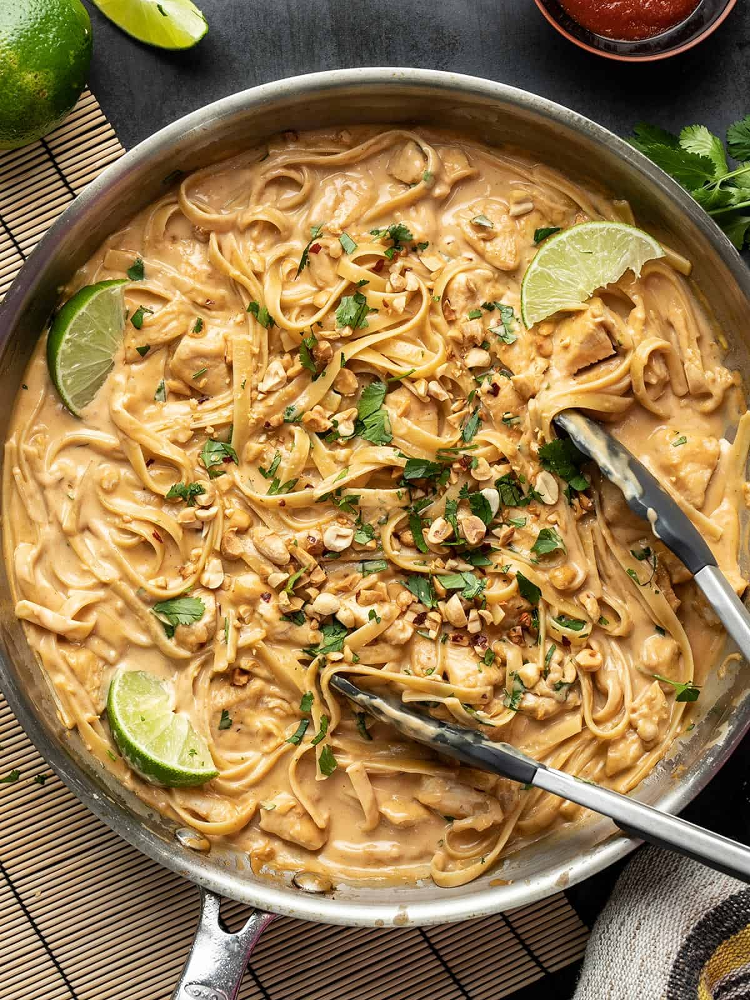

Peanut Chicken Noodles

Home
Description
These noodles are great for a hangover. Or at least, I think they would be. They are rich and decadant
and you will want to make these every day. The sauce thickens in the fridge, so leftovers aren't quite as
delicious with texture but the taste is still 10/10. I would not label this meal as healthy but there's no
reason to have a vegetable with this. The noodles are filling enough. However, if you want to add veggies,
I would recommend shredded carrots, broccoli, or edamame.
Ingredients
- 1/3 cup smooth peanut butter
- 1 teaspoon sriracha or more if you like spicy food
- 2 Tbsp brown sugar
- 1 fresh lime (2 tbsp juice)
- 1 tbsp soy sauce
- 2 clove garlic minced
- 1 tsp grated fresh ginger
- 1 13.5oz can coconut milk(can be sweetened or unsweetened)
- 1 lb chicken tenders, cut in small cubes
- 1 tbsp cooking oil
- 8 oz long flat noodles (like fettuccine or rice noodles)
- chopped peanuts and cilantro for garnish
Steps
- Prepare the peanut sauce first. In a medium bowl, whisk together until smooth the peanut butter, sriracha, brown
sugar, soy sauce, lime juice, minced garlic and grated ginger.
- Add the coconut milk to the peanut sauce and whisk again until smooth.
- Start the pasta water.
- Heat a large skillet over medium-high heat. Once hot, add the cooking oil and coat the bottom of the pan.
Add the chicken and cook until brown on both sides. Be care not to over cook the chicken.
- Add the prepared peanut sauce into the skillet, turn down the heat to medium-low and stir to dissolve any
browned bits off the bottom of the skillet. Let the chicken simmer in the sauce over low, stirring occasionally, while you cook the noodles.
- Cook your noodles according to the package directions, then drain in a colander.
- Add the cooked noodles to the skillet and toss until everything is everly mixed and the noodles are coated in the sauce.
- Sprinkle the noodles with the peanuts and cilantro, then serve immediately!